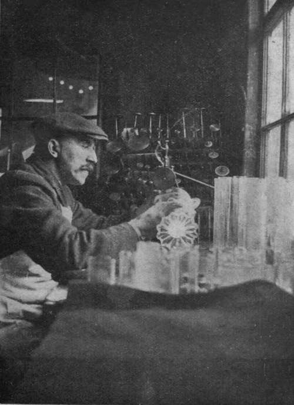

Decorated Glassware. Continued
Description
This section is from the book "Glass And Glass Manufacture", by Percival Marson. Also available from Amazon: Glass and Glass Manufacture.
Decorated Glassware. Continued
Glassware for engraving and intaglio may be made much lighter than that required for cutting.
Etching# is a method of decorating glass by the chemical action of hydrofluoric acid. This acid in its various combinations attacks glass, decomposing its surface and giving a dull or semi-matt effect. Only those portions of glass which constitute the design are exposed to the acid paste or fumes. The other portions are protected by a covering of beeswax, which is unaffected by the acid and protects any portions covered by it.
The process carried out is varied in many ways. In some cases pantograph and etching machines are introduced to give the designs. A warm copper plate, with the design or ornament engraved thereon, is covered with a wax paste, and the surplus cleaned off with a palette knife or pad of felt, leaving the paste in the recesses of the engraving; a piece of thin tissue paper is laid over the engraved plate and takes an impression of the design in wax. This tissue is then transferred to the glass to be decorated, the wax design adheres to the glass, and the paper is drawn away. A further resist or coating of wax is painted round the design to protect the rest of the glass, and a paste composition giving the action of hydrofluoric acid is applied, which after a short time eats into the exposed portions of glass. After another short interval, it is washed off, and the wax coating removed by washing the glass in hot, soapy water. The design then appears in a matt state against the clear, unattacked glass.
Glass Engraving
The mechanical method of etching the design is carried out by first dipping the whole glass into a bath of hot liquid wax, allowing a thin coating to set and cool upon the surface of the glass. The article is then introduced into a machine which has a number of needles, worked by sliding gears in an eccentric fashion. These needles are adjusted just to scratch away the thin coating of the wax into a design, and expose the glass in the form of a decorated scroll or band round the glass. The glass is then dipped into a vat or bath of dilute hydrofluoric acid for a few minutes, after which it is removed and washed, and the wax recovered by heating the glass upon a perforated tray, when it melts and runs off the glass, and is collected for further use. The article is then washed and cleaned and shows the scroll or etched portions where the needle has traced the design. Another effective result is obtained by etching a design on the back of a plate glass panel. After cleaning and silvering or gilding the back, the design appears in a matt silver or gilt lustre upon viewing it from the front of the mirror.
Glass which has been sand-blasted has a similar appearance to etched glass, but a rather coarser surface. The portions of the glass plate' to be decorated are exposed to the action of a blast of air, into which fine, sharp-grained quartz sand is automatically fed. An abrasive action, due to the force with which the particles of sand are blown against the glass, takes place, rendering the surface opaque or matt. This method is generally adopted in printing trade names or badges upon bottles, etc. A stencil of parchment or lead foil is cut out to form, and used to protect the glass and resist the abrasion where required. Rubber gloves are worn by the operator. The work of sand-blasting is executed within a small enclosed dust-proof chamber fitted with glass panels. The operator manipulates the glass through openings in the sides of the chamber. The air blast is supplied by a motor-driven air compressor and is regulated by a foot pedal. The action is very sharp and quick, and is a cheap and effective way of badging hotel glassware and proprietary bottles.
Glassware may be decorated by being enamelled with coloured enamels. In this method of decorating, soft, easily-fused, coloured enamels are used, containing active fluxes such as borates of lime and lead, which melt at low temperatures. These enamel colours are prepared by being fused and then ground to fine powders, which are mixed with a siccative or oil medium, and painted upon the glass. The painted ware is then heated within a gas or wood-fired enamelling furnace or muffle, until the painted designs are melted and fused well upon the glass. The glass is re-annealed in cooling down the muffle. For this form of decoration, a hard refractory glass is required that will not soften easily under the heat of the muffle; otherwise the glassware becomes misshapen too easily under the heat necessary to flux or fuse the enamels properly.
A form of staining glass is also practised which consists of applying compositions containing silver salts to portions of the glass and firing at a low heat. The silver stains the glass a deep yellow. The colour may be varied by the use of copper salts, when a fine ruby stain is obtained wherever applied.
Iridescent glassware is produced by several methods. Sometimes a small proportion of silver and bismuth is added to a coloured glass batch, and by manipulating the resulting glass in a carbonaceous flame the silver is partially reduced within the glass, forming a pretty iridescent reflection on the glassware. By a suitable adjustment of the oxygen content in the composition of such glasses, the iridescence can be regulated to such an extent that the slightest flash or reducing influence gives a beautifully finished lustre over the ware.
Iridescence can also be formed by re-heating crystal glassware within a chamber in which salts of tin, barium, aluminium, and strontium are volatilised. This method produces a superficial iridescence which is not quite so permanent as the previous process.
Glass Silvering. The silvering of mirrors is carried out by taking a thoroughly cleaned plate of polished glass and floating one surface in a solution of silver nitrate, to which a reducing agent is added. The silver is thereby precipitated or deposited in a thin lustrous film upon the glass, which causes reflection by the rays of light striking against the silvered background.
After silvering, the back of the plate is coated with a protecting paint or varnish, which dries and preserves the silver deposit and gives it permanency.
In the manufacture of fancy ornaments, such as birds, hat pins, and small animals, various coloured glass cane and tube are worked together by the operator melting and welding the respective colours together before a blow-pipe flame, the tails of the birds being formed by sealing in a fan of spun glass into the body of the bird, which has been blown out and formed from a piece of tube. Some very curious ornaments are formed in this way. Glass buttons, pearl, and bead ornaments are formed by working cane and tube of various coloured compositions before the blow-pipe, sticking and shaping the various forms on to wire.
Mosaic glass decoration is used in jewellery in a mural or tessellated form. In this method small cubical or other shaped cuttings of various coloured opaque glass are inlaid in mastic cements or pastes to form the design, the face being afterwards ground and polished smooth, and mounted or set within the ornament.
Larger cuttings may be inlaid in cement for pavement or mural decoration.
Continue to:
- prev: Chapter XV. Decorated Glassware
- Table of Contents
- next: Chapter XVI. English And Foreign Methods Of Glass Manufacture Compared
Tags
glass, manufacturing technology, furnace, glassware, wine glass